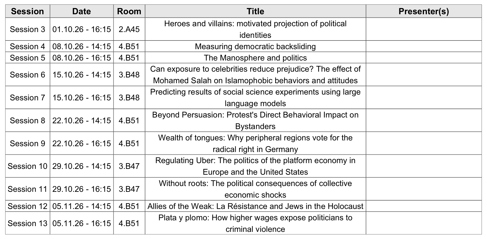
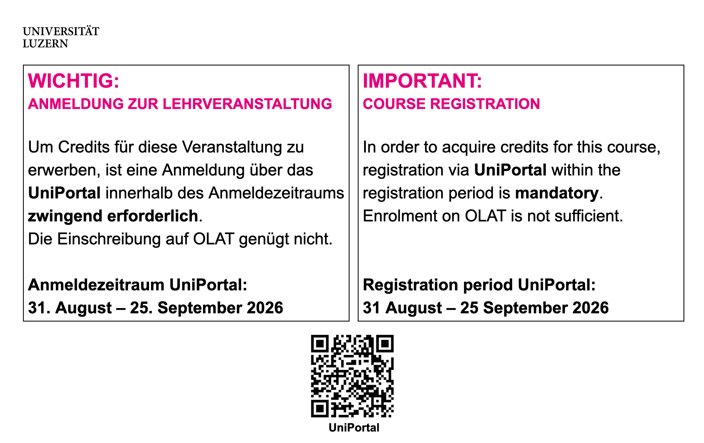

Introduction
Session 01
Dr. K. Jonathan Klüser
Introduction
About me
Postdoctoral researcher at the project DIGIPOL and the Chair of Political Behaviour and Communication
PhD in Political and Social Sciences from the EUI
Interested in political behaviour, comparative politics, democratic attitudes and preferences, quantitative methods
Originally from the city with the most UNESCO heritage sites in the world
You can find more information about me: tbd
What about you?
Name
Background
Why did you take the course?
What do you expect from this course?
What is this course about?
An era of data and computation

An era of data and computation

Is it enough with collecting data and having the power to analyze it?
No! Science is all about design!
The goal is to make inferences about the world on the basis of empirical information
To make the right inferences, methods and rules are crucial
This course is about these rules and methods, and how to apply them, with a focus on quantitative research
In what topics are you interested?


Learning outcomes
…understand the logic of quantitative social science.
…understand and critically assess quantitative research articles.
…identify an appropriate and feasible research design for a given research problem.
…communicate complex concepts effectively to a broad audience.
…perform simple descriptive and inferential statistical analyses.
The course organization
Teaching policy
This is a seminar, not a lecture!
Therefore, active participation is the most important tool:
No or only minimal slides
Basic readings must be read in advance
Seminar questions every week
At least one presentation by student
Integration and interaction policy
No discrimination
Inclusive language
No bullying
Everyone should participate in equal terms
Artificial intelligence (AI) policy
AI tools, like ChatGPT, are allowed
They should augment, not replace, human work
Mandatory declaration policy
Evaluation I
Attend all the sessions
Read the mandatory readings before each session
- Study the basic reading
Participate actively
Answer the seminar questions of each session
Specific folder in OLAT
To be uploaded the day before the class (but not graded!)
Evaluation II
Presentation of the applied readings
More guidelines later
Organization at the end of this class
Complete three take-home exercises
Second half of the course
Empirical applications with R
Two different tracks (beginner and advanced, more on this later)

Masterseminar paper
Between 7000 and 9000 words
Topic to be agreed with the lecturer
Paper outline of by December 1st 2026
Research question
Academic and societal relevance
Theory and hypotheses
Approach and structure of the paper
Submission deadline in Spring, but flexible
Office hours
No office hours!
Send an email to the lecturer (klueser@ipz.uzh.ch) to schedule a meeting one week in advance (via Zoom)
Resources (OLAT)
AJ: Angrist, J. D. (2014). Mastering’ metrics: The path from cause to effect. Princeton University Press.
BCH: Blair, G., Coppock, A., & Humphreys, M. (2023). Research design in the social sciences: declaration, diagnosis, and redesign. Princeton University Press.
BF: Bueno de Mesquita, E. and Fowler A. (2021). Thinking Clearly with Data: A Guide to Quantitative Reasoning and Analysis. Princeton University Press.
GG: Gerber, A. S., & Green, D. P. (2012). Field experiments: Design, analysis, and interpretation.
KKV: King, G., Keohane, R.O., and S. Verba (1994). Designing Social Inquiry. Princeton: Princeton University Press.
KW: Kellstedt, P. M., and Whitten, G.D. (2013). The Fundamentals of Political Science Research. Third Edition. Cambridge: Cambridge University Press.
Additionally…
Schedule I
Session 1. Introduction (17.09.26 / 14:15–16:00 / HS 3)
Session 2. The logic of scientific research (01.10.26 / 14:15–16:00 / 2.A45)
Session 3. Theory and research design (01.10.26 / 16:15–18:00 / 2.A45)
Session 4. Data and measurement (08.10.26 / 14:15–16:00 / 4.B51)
Schedule II
Session 5. Descriptive inference (08.10.26 / 16:15–18:00 / 4.B51)
Session 6. Causal inference (15.10.26 / 14:15–16:00 / 3.B48)
Session 7. Predictive inference (15.10.26 / 16:15–18:00 / 3.B48)
Session 8. Experimental studies (22.10.26 / 14:15–16:00 / 4.B51)
- Publication take-home exercise I
Schedule III
Session 9. Large-N observational studies (22.10.26 / 16:15–18:00 / 4.B51)
Session 10. Small-N observational studies (29.10.26 / 14:15–16:00 / 3.B47)
Deadline take-home exercise I
Publication take-home exercise II
Schedule IV
Session 11. Statistical testing (29.10.26 / 16:15–18:00 / 3.B47)
Session 12. Introduction to regression I (05.11.26 / 14:15–16:00 / 4.B51)
Deadline take-home exercise II
Publication take-home exercise III
Session 13. Introduction to regression II (05.11.26 / 16:15–18:00 / 4.B51)
Session 14. Conclusion (12.11.26 / 14:15–16:00 / 2.A45)
- Deadline take-home exercise III
Let’s dig deeper!
The presentation
25 minutes max.
Two parts: paper summary/critique and research proposal
The summary/critique should focus on the research design and its limitations
The research proposal should build on these limitations
- The papers will be good, so build on them rather than (try to) destroy them
After the presentations, there will be a 20 minutes Q&A
Checklist Part I – Summary (~10 min)
- Core ideas (1–2 slides, ~3 min): Summarize the argument and main takeaways.
- Research design (~4 min): Present the research question, hypotheses, method, data type, unit of analysis, and key findings.
- Critique (~3 min): Identify strengths and main limitations of the research design (measures, validity, scope, etc.). Use clear communication: diagrams, step-by-step reasoning, examples, visual aids.
Checklist Part II – Proposal (~15 min)
- Address one main limitation: Focus on one key issue and justify why it matters.
- Propose one solution or extension: Suggest a feasible new design, replication, different data, or alternative method.
- Be realistic: Assume research funds are available, but do not “change the world” (e.g., deciding election dates).
- Seek guidance if needed: Contact the lecturer if unsure about preparation.
Additional Information Checklist
- Evaluation criteria: Clarity, understanding, critique quality, reasoning, feasibility, and ability to engage discussion.
- Avoid pitfalls:
- Don’t overcrowd slides.
- Avoid superficial content.
- Manage time (25 min total).
- Prepare early, rehearse, and refine slides.
- Practice in front of a friend and ask for feedback.
- Don’t overcrowd slides.
Let’s organize the calendar!

Three take-home assignments
Autonomous learning of R and RStudio
Materials will be provided by the lecturer
Goal: gain hands-on experience with class topics
Two voluntary tracks depending on your familiarity with R:
- Beginner – installation, getting started with RStudio, comment (maybe perform) basic statistical analyses
- Advanced – everything in Beginner + additional statistical analyses
- Beginner – installation, getting started with RStudio, comment (maybe perform) basic statistical analyses
Please send me an email with your decision next week!

Conclusion
Next session (01.10.26 - 14:15)
The logic of scientific research
Presentation of ongoing research by the lecturer:
- Klüser, S., Klüser, K. J., & Hoes, E. (2026). AI-Generated Explicit Deepfakes Damage Politicians’ Perceived Leadership Competence, Trustworthiness and Electoral Prospects. Revised and resubmitted, Communications Psychology
Do not forget to register at UniPortal!


Thanks! 🙂

Masterseminar - Fall Term 2026